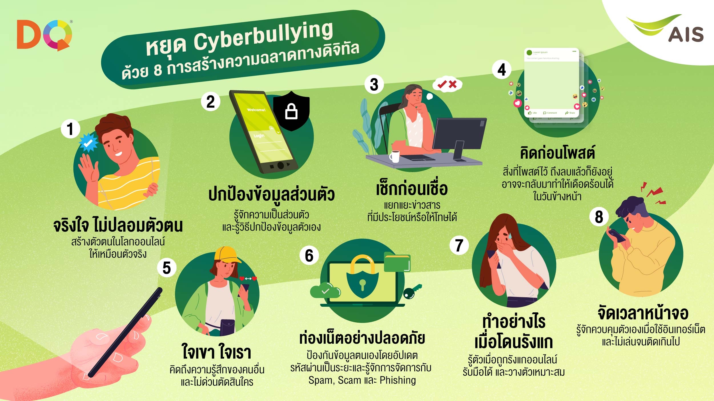

ทางดิจิทัล (DQ Digital Intelligence) ความฉลาดทางดิจิทัล (DQ: Digital Intelligence)
คืออะไร ความฉลาดทางดิจิทัล (DQ: Digital Intelligence Quotient) คือ กลุ่มความสามารถทางสังคม อารมณ์ และการรับรู้ ที่จะำให้คนคนหนึ่งสามารถเผชิญกับความท้าทายของชีวิตดิจิทัล และสามารถ ปรับตัวให้เข้ากับชีวิตดิจิทัลได้ ความฉลาดทางดิจิทัลครอบคลุมทั้งความรู้ ทักษะ ทัศนคติและค่านิยม ที่จำเป็นต่อการใช้ชีวิตในฐานะสมาชิกของโลกออนไลน์ กล่าวอีกนัยหนึ่งคือ ทักษะการใช้สื่อและ การเข้าสังคมในโลกออนไลน์ ความฉลาดทางดิจิทัล เป็นผลจากศึกษาและพัฒนาของ DQ institute หน่วยงานที่เกิดจากความ ร่วมมือกันของภาครัฐและเอกชนทั่วโลกประสานงานร่วมกับ เวิลด์อีโคโนมิกฟอรั่ม (World Economic Forum) ที่มุ่งมั่นให้เด็กๆ ทุกประเทศได้รับการศึกษาด้านทักษะพลเมืองดิจิทัลที่มีคุณภาพและใช้ชีวิต บนโลกออนไลน์อย่างปลอดภัยด้วยความก้าวหน้าของเทคโนโลยีสมัยใหม่ อย่างไรก็ตาม ระดับทักษะ ความฉลาดทางดิจิทัลของเด็กไทยตามรายงาน DQ report 2018 ยังอยู่ในระดับต่ำอยู่ ทั้งนี้เนื่องจาก สำนักงานส่งเสริมเศรษฐกิจดิจิทัล (ดีป้า) กระทรวงดิจิทัลเพื่อเศรษฐกิจและสังคม, สำนักงานคณะ กรรมการการศึกษาขั้นพื้นฐาน (สพฐ.) กระทรวงศึกษาธิการ และ DQ Institue ร่วมกันทำโครงการ #DQEveryChild โดยศึกษาเด็กไทยอายุ 8-12 ปี ทั่วประเทศ 1,300 คน ผ่านแบบสำรวจออนไลน์ DQ Screen Time Test ชุดเดียวกันกับเด็กประเทศอื่นๆ รวมกลุ่มตัวอย่างทั่วโลกทั้งสิ้น 37,967 คน ผลการศึกษาพบว่า เด็กไทยมีความเสี่ยงจากภัยออนไลน์ถึง 60% ในขณะที่ค่าเฉลี่ยของการศึกษา ครั้งนี้อยู่ที่ 56% (จาก 29 ประเทศทั่วโลก) ภัยออนไลน์ที่พบจากการศึกษาชุดนี้ประกอบไปด้วย การกลั่นแกล้งบนโลกออนไลน์, ถูกล่อลวงออกไปพบคนแปลกหน้าจากสื่อสังคมออนไลน์, ปัญหา การเล่นเกม เด็กติดเกม, ปัญหาการเข้าถึงสื่อลามกอนาจาร, ดาวน์โหลดภาพหรือวิดีโอที่ยั่วยุอารมณ์เพศ และพูดคุยเรื่องเพศกับคนแปลกหน้าในโลกออนไลน์ ดังนั้น ทักษะความฉลาดทางดิจิทัลจึงควรที่ จะถูกนำมาใช้ในการพัฒนาคุณภาพและความสามารถของเยาวชนไทย
